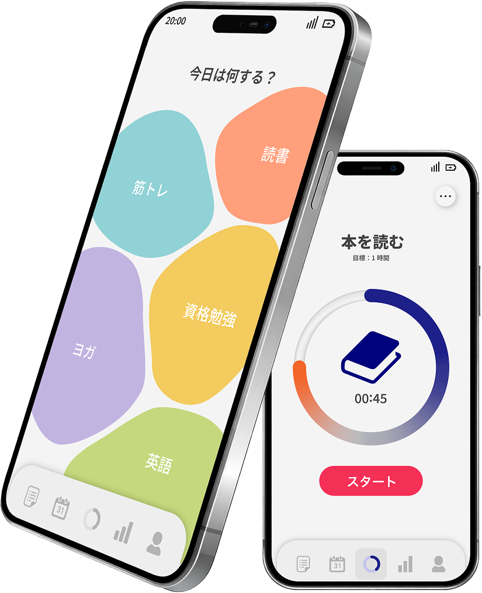
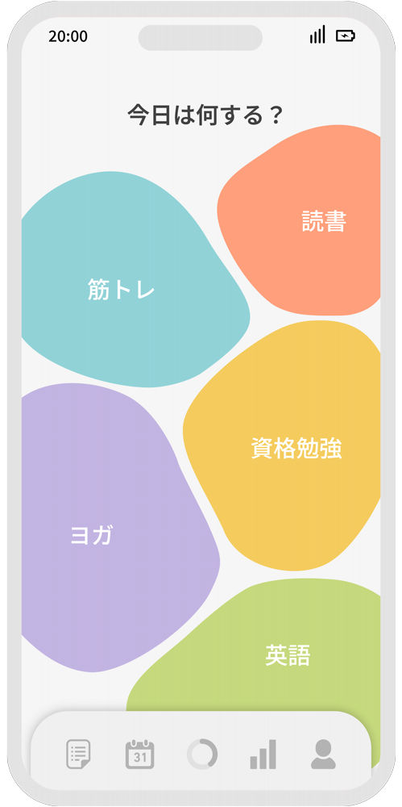
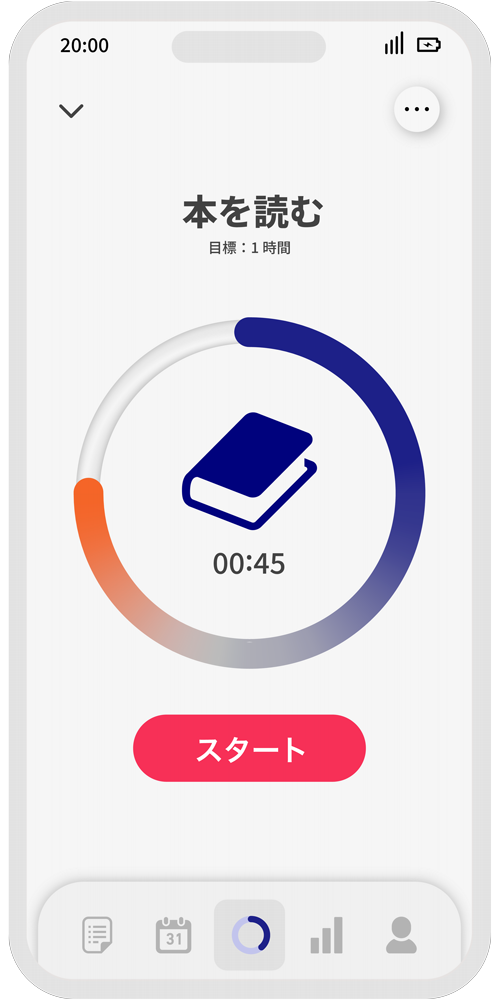
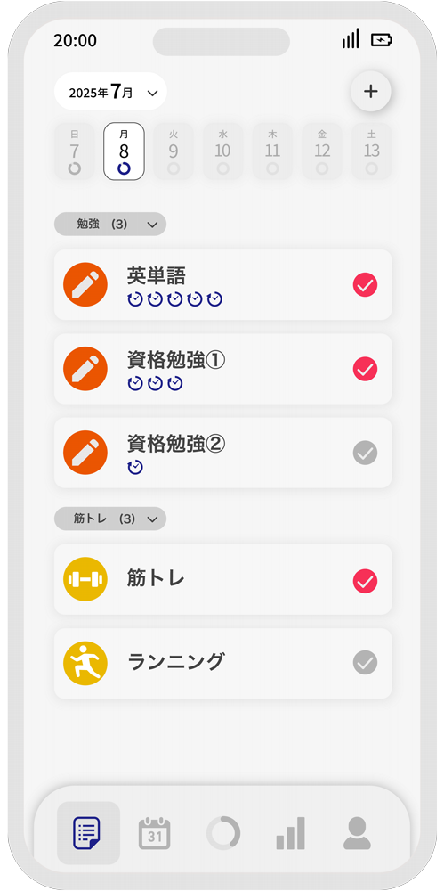
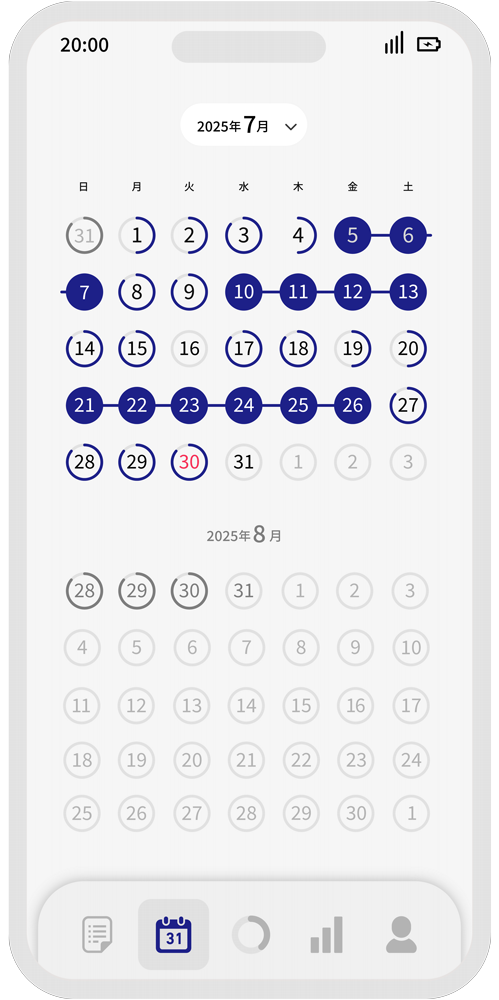
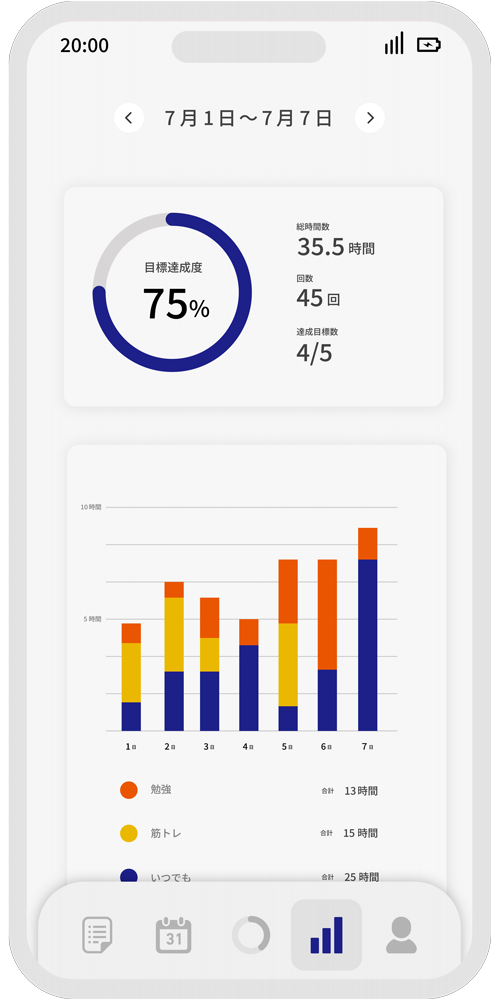
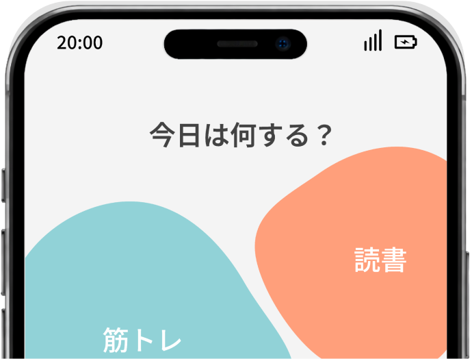

私たちは毎日、仕事や家事、連絡、予定など、たくさんの小さな選択を重ねながら過ごしています。
本を読みたい。勉強したい。体を動かしたい。そう思っていても、いつの間にか、選択の多さに埋もれてしまう。

「今日は何する？」
やりたいことを見逃さず、
今日の行動に変えていくアプリ。
私たちは毎日、仕事や家事、連絡、予定など、たくさんの小さな選択を重ねながら過ごしています。
本を読みたい。勉強したい。体を動かしたい。そう思っていても、いつの間にか、選択の多さに埋もれてしまう。
hibiは、選ぶ負担を減らし、始めるきっかけをつくるアプリです。
01
登録したタスクの中から、起動後すぐにその日やることを感覚的に選べます。
迷う時間を減らし、行動への一歩を軽くします。

02
時間で測るタスクはポモドーロ方式で記録。
一覧画面では、時間・回数・単発タスクをそれぞれの方法で確認できます。


03
達成した日はカレンダーに記録され、継続した日は線でつながって表示。
日々の達成と継続の流れをひと目で確認できます。

04
達成度や回数、時間を数値で表示し、カテゴリ別の総時間は棒グラフで確認。
1週間の行動をまとめて振り返れます。

“今日はこれをやろう”と決めるハードルが下がりました。
やりたいことはあるのに後回しにしがちだったので、最初の一歩を選びやすくなったのがよかったです。
moneさん (20代・学生)
完璧にできた日じゃなくても、ちゃんと記録が残るのが嬉しいです。
少しずつ続けている実感が見えるので、前よりも自分を責めずに取り組めるようになりました。
kaoriさん （30代・会社員）
カレンダーや振り返り画面を見ると、続けてきたことがちゃんと見えて励みになります。
毎日きっちりできなくても、また再開しようと思えるのがhibiのいいところだと思います。
kazukiさん (20代・会社員)
自分に合った記録方法を選べる
勉強、運動、読書など幅広く使える
無理なく続けられる設計
マルチタスクな毎日でも、やりたいことを見逃さず、今日の行動に変えていくためのアプリです。
アプリをダウンロード